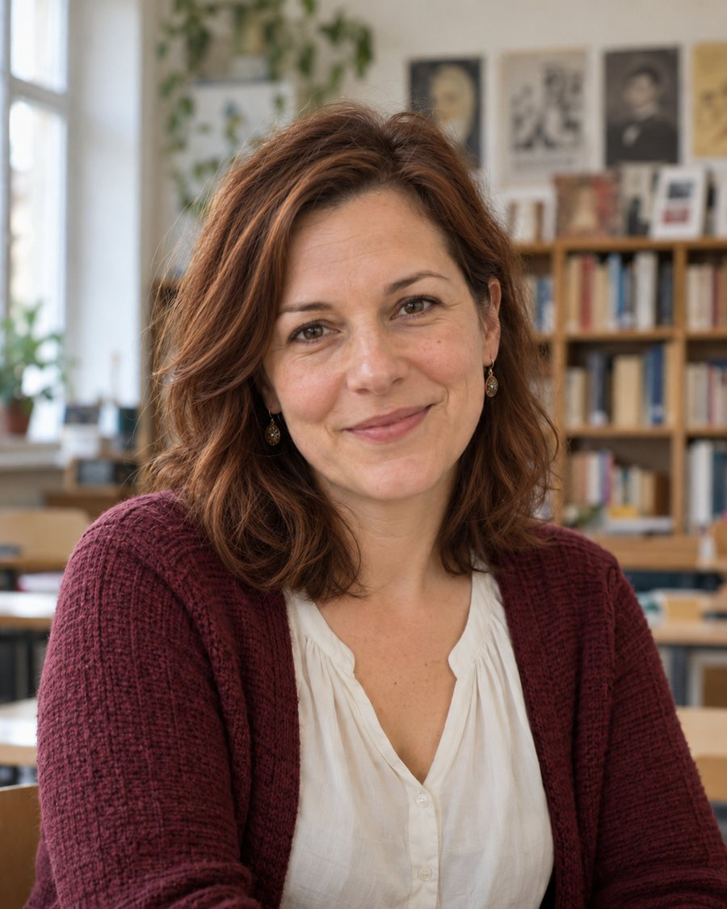

Persona kártya · Irodalmi labor

az irodalmi élmény megteremtője
Laura óráin az irodalom életre kel. A diákok jeleneteket játszanak el, szerepekbe lépnek, vitáznak a művek értelmezéséről. Szeretné, ha a tanterem irodalmi labor lenne: egy hely, ahol olvasni, beszélgetni és alkotni is lehet. Fontos számára az irodalmi hagyomány bemutatása is.
Tanítási filozófia
„Az irodalom akkor válik élővé, ha megtapasztaljuk.”
A legtöbb órám azzal kezdődik, hogy odébb kell tolni a padokat – ez minden alkalommal elvisz tíz percet. Olyan teret szeretnék, ahol a kör a természetes állapot, és ha jelenetet játszunk, nem kell bútort cipelni hozzá. És legyen egy sarok, ahová le lehet ülni olvasni akkor is, ha a többiek éppen hangosak.
Tervezési kihívás
Tervezzenek „irodalmi labort”, ahol olvasás, beszélgetés és drámajáték egyaránt megvalósulhat.